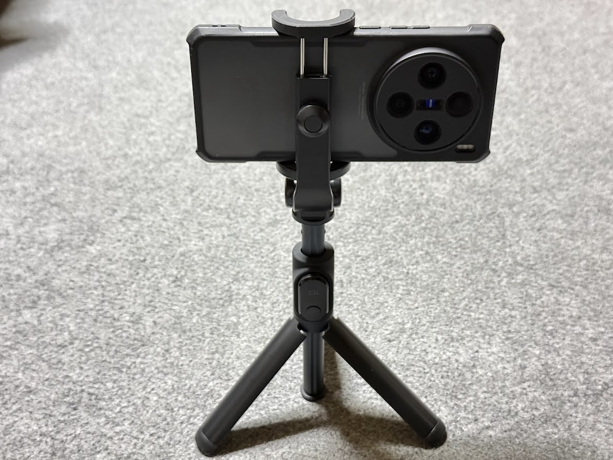
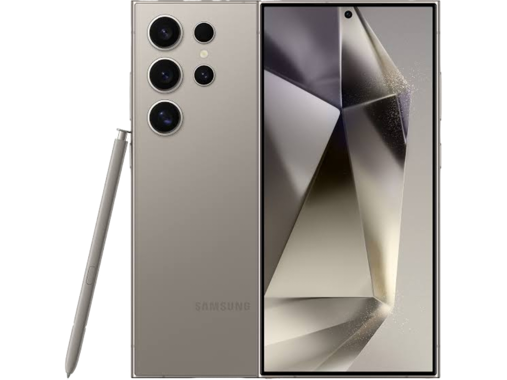
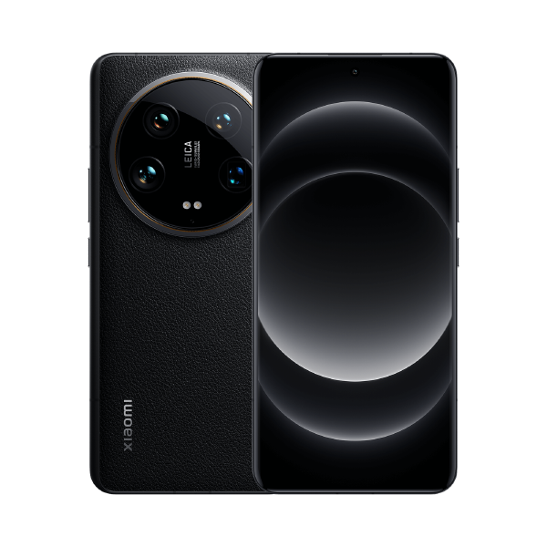
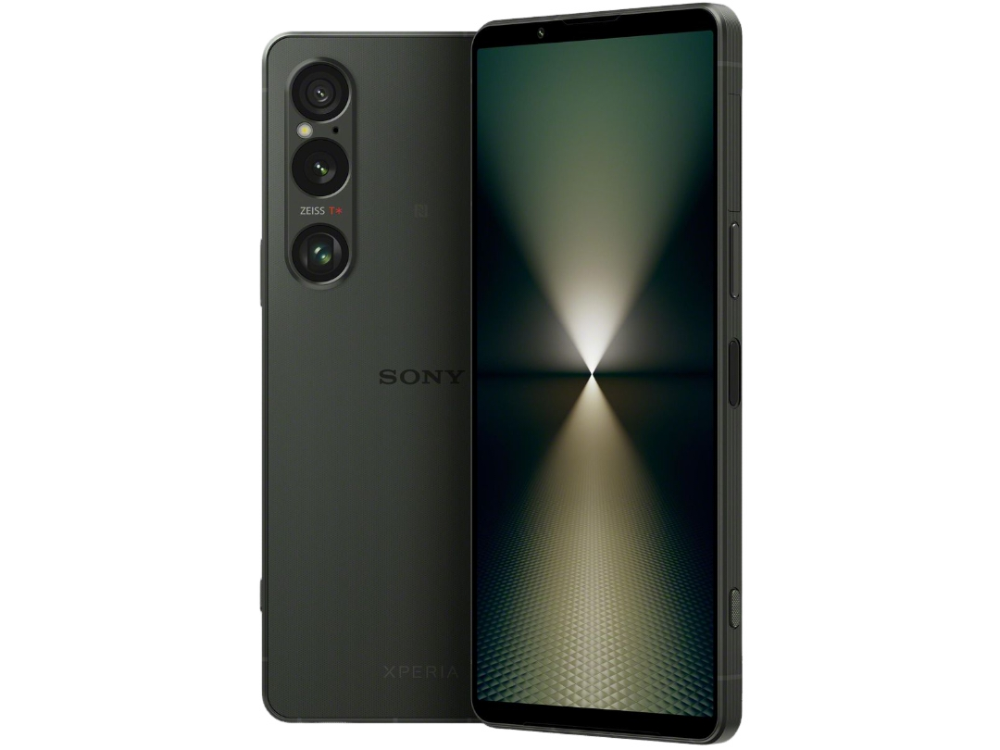
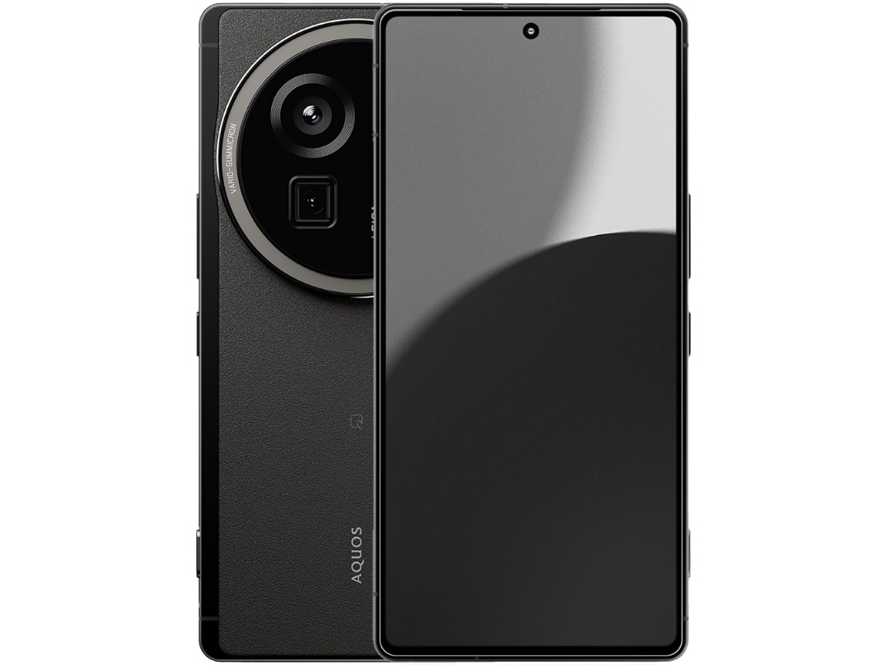
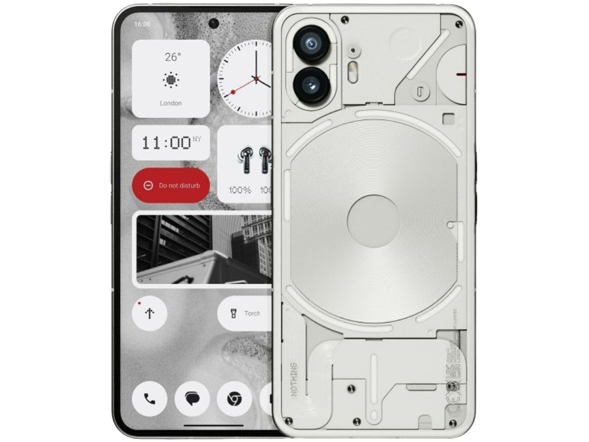

スマホのシャッター音を消す方法

国内発売のスマホはシャッター音強制
日本と韓国で発売されたスマホは大半の機種でシャッター音が強制的に鳴る｡ これはAndroidスマホだけでなくiPhoneでも同様で､マナーモードで無音になったり設定から無音化できる海外発売のスマホと違い､音量設定に関係なく強制的にシャッター音が鳴ってしまう｡ そのために海外版を買おうとしても家電量販店や携帯キャリアでの販売はなく､正規販売店で購入することはできない｡ また､海外版はFeliCa非搭載や技適未取得など､日本向けに最適化されていないことでのデメリットも発生する｡ サードパーティ製のアプリを使うという手段もあるが､それらのアプリはその機種に最適化されたものではなく､品質が悪かったり一部機能が使えなかったりする｡
一部機種はシャッター音を無音化可能
しかし､一部機種では設定を変更したり条件付きでシャッター音の無音化が可能である｡ ここからは対象機種とその方法について解説する｡
対象機種
対象の機種は以下の通りとなる｡ ･iPhone ･Google Pixel ･Galaxy ･Xiaomi ･Xperia ･AQUOS ･Nothing Phone ･motorola ･RedMagic
iPhone
実はiPhoneでもシャッター音は無音化できる｡
方法
1.海外版を買う
海外版では先程述べたデメリットがあるのではと思う人もいるだろうが､iPhoneに関しては例外である｡ まず､まめこmobileやイオシスなどのショップで香港版のiPhoneが未使用かつ保証付きで数多く販売されているため､他のスマホと比べて海外版が比較的入手しやすい｡ 保証の面でもAppleはiPhoneをアクティベートした日から1年間は世界中のApple StoreまたはApple正規サービスプロバイダで保証が受けられる｡ さらにiPhoneは全世界のモデルでFeliCaが搭載され､カナダ版､グアム版､メキシコ版､サウジアラビア版などには技適もつく｡
2.消音モードまたはメディアの音量を0にする
消音モードまたはメディアの音量が0のときはシャッター音が消える｡
デメリット
･国内版と比べて割高になる
海外版を利用するデメリットはないものの､国内版と比べて割高になる｡ また､携帯会社での2年レンタルや特価のようなものももちろんない｡
Google Pixel
Pixelの純正カメラアプリでのシャッター音無音化はroot化しない限り不可能である｡ そこで､純正カメラアプリのMod "GCam" を使うという方法がある｡ Pixelのカメラアプリは非常に優秀で､ハードウェアが弱くてもソフトウェアの力できれいな写真が撮れる｡ そのため海外の開発者たちがそのアプリを他のスマホでも使えるように移植したアプリがGCamとなる｡ ここではこのGCamを使用してシャッター音を消す｡
方法
1.GCam Hubで任意のapkをダウンロードしてインストールする｡
中には正常に動作しないものもあるので､1つ1つ試してみる｡
2.アプリを起動する
3.設定画面を開く
4. "カメラの音" をオフにする
あとはもともとある純正のカメラアプリを無効化するなどしてGCamを起動しやすいようにするといいかもしれない｡
デメリット
･電源ボタン2回押しでカメラ起動できない
GCamは純正カメラアプリベースだがあくまでModアプリのため､電源ボタン2回押しでカメラ起動には対応しない｡
･アプリを手動で更新する必要がある
apkでインストールしているため自動でアプリが更新されず､再びapkをダウンロードして手動で更新する必要がある｡
･開発者の違いに注意する必要がある
開発者が違うアプリをインストールしようとするとインストールできなかったり､仕様が変わったりする｡
Galaxy

Galaxyでは "SetEdit" というアプリを使ってシステム設定を変更するという方法があったが､Android 14で塞がれてしまった｡ そこで､SetEditで適用していた変更をadbコマンドを使って実行する｡ adbコマンドはPCで実行する方法とスマホで実行する方法の2通りある｡ ここではPCを用いた方法を解説する｡
方法
1.PCにadbを導入し､Galaxyでadbデバッグを有効にする
2.PCとGalaxyをUSBケーブルで接続する
3.PCのターミナルでadbコマンドを実行する
Windowsはコマンドプロンプト､Macはターミナルで adb shell settings put system csc_pref_camera_forced_shuttersound_key 0 を実行する｡ これにより､シャッター音の動作が海外仕様となる｡
4.システム音の音量を0にする
シャッター音の音量はシステム音の音量と同期される｡ 充電時や画面ロックの解除､タッチ操作の際に鳴るシステム音の音量を0にすることでシャッター音が消える｡ システム音の音量はマナーモードや "通知をミュート" をONにすることでも0になる｡
デメリット
･アップデートごとにコマンドを実行する必要がある
アップデート後は適用した変更が元に戻されるため､アップデート毎にコマンドを実行する必要がある｡
･システム音の音量を0にする必要がある
あまりいないと思うが､普段からシステム音を鳴らしている人はカメラ起動時のみシステム音の音量を0にするオートメーションを作成するなど､工夫する必要がある｡
･今後アップデートによりこの方法が使えなくなる可能性がある
これはバグに近い挙動のため､今後アップデートでこの方法が塞がれる可能性がある｡
Xiaomi

XiaomiはSoCにDimensityを搭載したキャリア版とSIMフリー版で､方法は異なるがそれぞれシャッター音が消せる｡
Dimensity搭載のキャリア版の方法
1.開発者向けオプションを有効化する
設定アプリを開き､ "デバイス情報" の "OSバージョン" を7回タップし､パスワードを入力する｡
2.電話アプリでコードを入力する
電話アプリを開き､ *#*#3646633#*#* を入力する｡
3.権限を許可する
4. "Hardware Testing" を表示する｡
5. "Audio" をタップする｡
6. "Volume" をタップする｡
7. "Audio Playback" をタップする｡
8. "System" を "Enforced_Audible" に変更する｡
9. "BT A2DP" を "Speaker" に変更する｡
10. "Index15" の値を "255" から "0" にする｡
この値がシャッター音の音量になる｡
11. "Set" をタップする｡
12. "Set succeeded" が表示されたら "OK" をタップする｡
SIMフリー版の方法
1.設定アプリを開く
2. "追加設定" をタップする
3. "地域" を日本と韓国以外にする
ここで地域を変更しても特に問題はない｡
4.カメラアプリを起動する
5.設定画面を開く
6. "シャッター音" をオフにする
地域が日本と韓国以外に設定されているとこの項目が現れる｡
デメリット
･キャリア版の方法はDimensity搭載端末のみ
キャリア版の方法で電話アプリから開くEngineerModeはSoCにDimensityを搭載した端末用のモードのため､Redmi Note 13 Pro 5GのようなSoCにSnapdragonを搭載したキャリア専売のスマホはこの方法が使えず､シャッター音は消せない｡
Xperia

XperiaのSony Store直販モデルはシャッター音が消せる｡ その方法はカメラアプリの設定を変更する方法とマナーモードまたはサイレントモードにする方法の2通りある｡
カメラアプリの設定を変更する方法
1.XperiaのSony Store直販モデルを購入する
楽天モバイルやIIJmio､mineoなども含む通信事業者が販売するモデルはシャッター音が消せない｡
2.カメラアプリを開く
Xperia 10シリーズや2024年以降のモデルのカメラアプリだけでなく､Xperia 1/5シリーズの2023年モデル以前のPhoto Proアプリも対象である｡
3. "MENU" をタップする
4. "カメラ操作音" を "OFF" にする
マナーモードまたはサイレントモードにする方法
1.XperiaのSony Store直販モデルを購入する
楽天モバイルやIIJmio､mineoなども含む通信事業者が販売するモデルはシャッター音が消せない｡
2.マナーモードまたはサイレントモードに設定する
着信音がオフの状態ではカメラアプリの設定に関わらずシャッター音が鳴らない｡
デメリット
･対応機種はSony Store直販モデルのみ
通信事業者が販売するXperiaはシャッター音が消せない｡ qUnlock Toolを使ってBLUを許可して実行し､root化してシャッター音を消す方法もあるが､qUnlock Toolは有料でありさらに確実にBLUを許可できる保証もない｡
AQUOS

AQUOSは2024年以降に発売されたSIMフリー版でシャッター音が消せる｡
方法
1.2024年以降発売のSIMフリー版のAQUOSを購入する
Xperiaと異なり､SHARP直販モデルだけでなく楽天モバイルやIIJmio､mineoなどの通信事業者が販売するモデルでもシャッター音が消せる｡ もちろん､UQモバイルやY!mobileを含むキャリア版ではシャッター音が消せない｡
2.カメラアプリを開く
3.設定画面を開く
4. "シャッター音" をオフにする
デメリット
･対応機種は2024年以降発売のSIMフリー版のみ
2023年以前のモデル､またはキャリア版ではシャッター音が消せない｡ また､Xperiaと違いブートローダーアンロックもできない｡
motorola

motorolaはシャッター音が消せるが､日本のSIMを利用している状態ではシャッター音が鳴る｡ ここではeSIMまたはデュアルSIMに対応している必要があるが､日本のSIMを利用していてもシャッター音が消えるようにする方法を述べる｡
eSIM対応機種の方法
1.Ubigiのアプリをインストールし､起動する
Ubigiとは海外で使えるeSIMを発行できるサービスである｡
2.Ubigiアカウントを作成する
3. "Ubigi eSIMに連携する" をタップする
4. "スマートフォン" を選択し､ "いいえ" を2回選択する
5. "フリーeSIMを今すぐインストールする" をタップする
6. eSIMをダウンロードする
端末に認識されたらeSIMは不要なため､バッテリー節約のために無効化することを推奨する｡ ただし､無効化した状態で再起動するとシャッター音が再び鳴るようになる｡
7.カメラアプリを開く
8.設定画面を開く
9. "シャッター音" をオフにする
海外のeSIM(Ubigi)が認識されているため､日本のSIMを利用していてもシャッター音の項目が現れる｡
デュアルSIM対応機種の方法
1.海外のSIMカードを購入する
ECで海外のプリペイドSIMを購入するのが手っ取り早い｡
2.海外のSIMカードを挿入する｡
3.カメラアプリを開く
4.設定画面を開く
5. "シャッター音" をオフにする
海外のSIMカードが認識されているため､日本のSIMを利用していてもシャッター音の項目が現れる｡
デメリット
･対応機種はeSIMまたはデュアルSIM対応モデルのみ
motorola razr 5Gのソフトバンク版など､eSIMおよびデュアルSIMに非対応の機種でシャッター音を消す場合は日本のSIMを利用できない｡
･eSIMを無効化した状態で再起動するとシャッター音が鳴るようになる
再起動のたびにeSIMを有効化してカメラアプリからシャッター音をオフにしてからeSIMを再び無効化するか､バッテリー持ちを犠牲にしてeSIMを常に有効にするしかない｡
･今後アップデートによりこの方法が使えなくなる可能性がある
Galaxyと同じくこれはバグに近い挙動のため､今後アップデートでこの方法が塞がれる可能性がある｡
Nothing Phone

Nothing Phoneもmotorolaと同じく日本のSIMを利用していない状態でシャッター音が消せるが､日本のSIMを利用した状態では海外のSIMを認識させてもシャッター音が消せない｡
方法
1.日本のSIMを利用しない
Nothing Phoneでシャッター音を消す場合､海外のSIMカードを挿してローミングで使うか､SIMカードを挿さずモバイルデータ通信を諦めるしかない｡
RedMagic
RedMagicのシャッター音を消す方法はこれまで紹介してきた方法の中で唯一デメリットがない｡
カメラアプリの設定を変更する方法
1.カメラアプリを開く
2.設定画面を開く
3. "シャッター音" をオフにする
マナーモードまたはサイレントモードにする方法
1.マナーモードまたはサイレントモードに設定する
Xperiaと同じく､マナーモードまたはサイレントモードでシャッター音が消える｡
デメリット
･なし
特殊な設定は不要で､かつ条件もない｡
シャッター音は何のために存在するのか
日本にはシャッター音は鳴らさなければならないという法律はない｡ それにも関わらず､なぜ多くのメーカーが日本で販売する端末でシャッター音を強制するのか｡ 主な理由として､携帯キャリアによる自主規制がある｡ カメラ付きの携帯電話が発売され始めてから､盗撮防止という目的で携帯キャリアによるシャッター音の強制が行われてきた｡ これに準じてSIMフリー版でもシャッター音を強制しているメーカーが多い｡ しかし､シャッター音を鳴らしたところで盗撮の防止になるとは考えにくい｡ また､先述の通り日本と韓国以外ではシャッター音の強制は行われていない｡ よって､この自主規制は無用の長物である｡ 最近はXiaomi公式がシャッター音無音化の存在を認識していたり､XperiaやAQUOSもSIMフリー版でシャッター音を消せるようになった｡ 今後このような流れが日本のスマホ業界で広がっていくことを期待したい｡